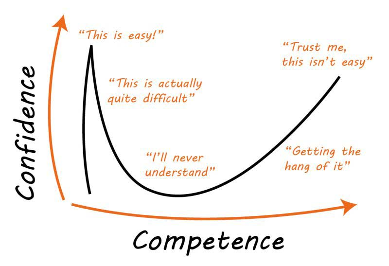

Dunning-Kruger effect
The Dunning-Kruger effect is a cognitive bias in which people with limited competence in a particular domain
overestimate their abilities. It was first described by Justin Kruger and David Dunning in 1999. Some
researchers also include the opposite effect for high performers: their tendency to underestimate their skills.
In popular culture, the Dunning-Kruger effect is often misunderstood as a claim about general overconfidence of
people with low intelligence instead of specific overconfidence of people unskilled at a particular task.

Cognitive Bias
A cognitive bias is a systematic pattern of deviation from norm or rationality in judgment. Individuals
create their own "subjective reality" from their perception of the input. An individual's construction of
reality, not the objective input, may dictate their behavior in the world. Thus, cognitive biases may sometimes
lead to perceptual distortion, inaccurate judgment, illogical interpretation, and irrationality.
While cognitive biases may initially appear to be negative, some are adaptive. They may lead to more effective
actions in a given context. Furthermore, allowing cognitive biases enables faster decisions which can be
desirable when timeliness is more valuable than accuracy, as illustrated in heuristics. Other cognitive
biases are a "by-product" of human processing limitations, resulting from a lack of appropriate mental
mechanisms (bounded rationality), the impact of an individual's constitution and biological state (see embodied
cognition), or simply from a limited capacity for information processing. Research suggests that cognitive
biases can make individuals more inclined to endorsing pseudoscientific beliefs by requiring less evidence for
claims that confirm their preconceptions. This can potentially distort their perceptions and lead to inaccurate
judgments.